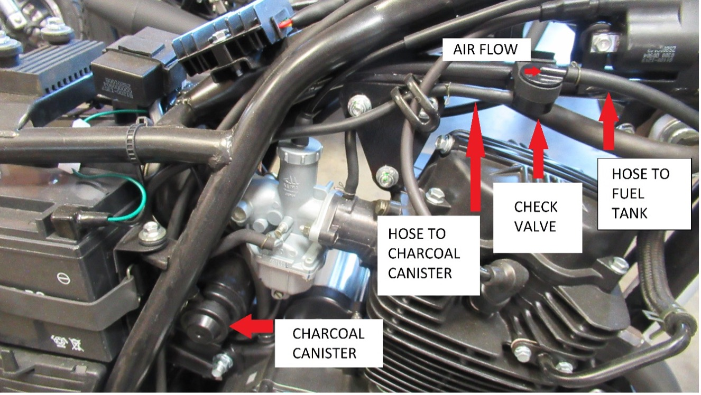
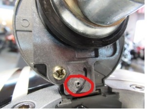
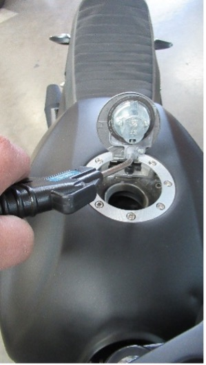
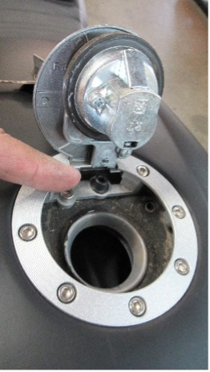
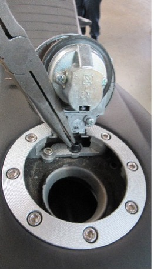
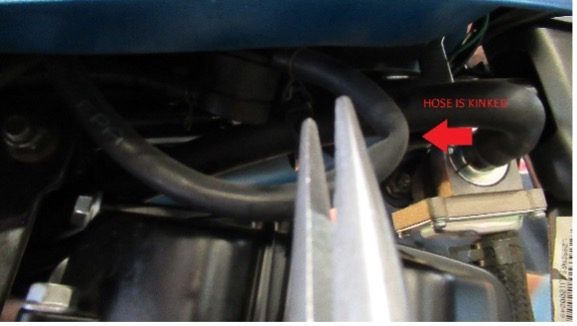
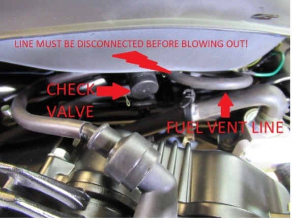
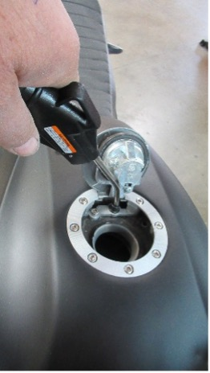

If your CSC SG250 San Gabriel is experiencing the following symptoms, you may have a clogged or restricted fuel cap vent.
- Running out of power or stopping while running at speed. But will restart a short time after.
- Stalls or dies within 5-10 minutes of riding but then restarts. Dies again after 5-10 minutes of riding.
- Hesitation at sustained high RPM riding.
These are symptoms of fuel starvation, possibly caused by a clogged or restricted fuel vent. This tutorial assumes that there is fuel in the tank and the fuel petcock is in the ON or RES position.
The SG250 has a fuel vent built into the locking cap. This is part of the emissions system, and a small hose runs from the vent under the tank to a check valve under the right side of the fuel tank. If the vent gets restricted or clogged, fuel will not flow freely to the carburetor, because a slight vacuum is created. It’s like when you hold the end of a straw in your drink and put your finger over the end. The fluid stays in the straw until you release your finger, then the fluid flows freely.
The emissions system has the following components (shown in the photo below):
- The fuel cap vent (not shown).
- The hose from the fuel tank to the check valve.
- The check valve.
- The hose from the check valve to the charcoal canister.
- The charcoal canister.

First thing to do is restart the motorcycle. Will it run and hold an idle? Or does it seem like it’s “running out of gas”? Pop the fuel cap and see if it starts. Close the cap (NEVER ride with the cap open) and see how the motorcycle runs down the road. If the symptoms re-appear, crack open the cap again. Does it run again? If so, this will more or less verify that it might be a venting problem.
Here’s the procedure for fuel vent diagnosis/maintenance:
|
Pop the fuel cap open. |
 |
|
Is the cap’s vent free of any debris/obstruction? |
 |
|
If you have access to compressed air you can blow the CAP’s vent clear as show here. |
 |
|
Inspect the rubber grommet/seal on the tank vent. Is it in good shape? Not pinched or deformed in any way? |
 |
|
If the grommet/seal is damaged, you can remove it as shown. A pair of needle-nose pliers comes in handy. This may have been the problem. Ride the motorcycle and see how it runs. If the problem persists, proceed to the remaining steps below.
|
 |
|
If the grommet/seal is not damaged, leave it in place. Move to under the right side of tank and inspect where the tank’s vent line is connected to the canister. Is the line kinked, as shown in the top picture? If so, remove the line from the check valve (again, needle-nose pliers are handy) and route so the line is not kinked. You can use compressed air to ensure that the line from the cap to the check valve is free of obstruction. This line MUST be DISCONNECTED from the check valve when you do this, otherwise the compressed air will pop that line right off anyway! |
 |
|
Once the line is disconnected from the check valve, snug the air line up to the grommet as shown here and, using compressed air, clear the line. Reconnect the line at the check valve. |
 |
|
Close the fuel cap and take the motorcycle for a test ride. |
|
In most cases this will resolve the fuel venting/starvation problem.